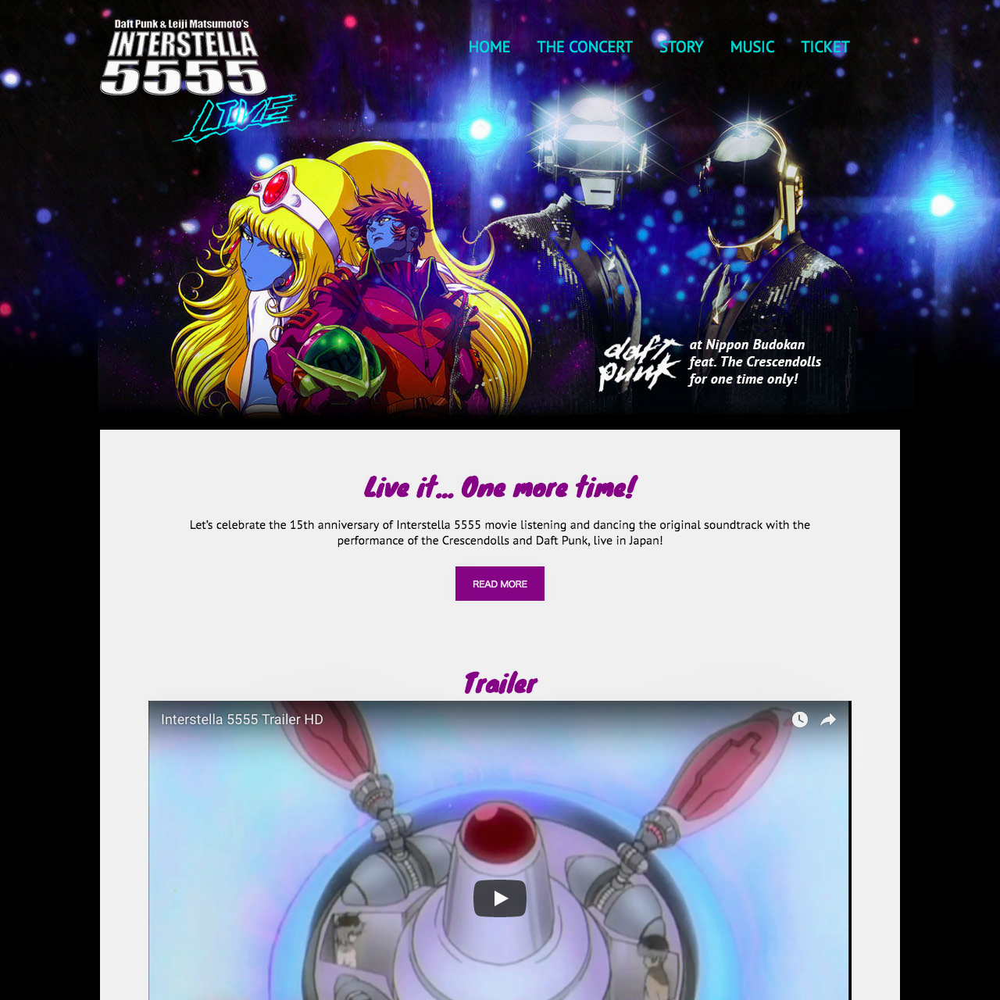

> work

Interstella
Interstella was a student project which built introduction webpages of a fake concert to celebrate the 15th anniversary of Interstella 5555 movie in Japan. These pages were developed from scratch within 7 days by Asami and her partner, using Photoshop/Illustrator/CSS/Javascript.
Web browsers except for Chrome doesn’t support "display: flow-root" so this project used "clearfix" hack to lay out the elements in story.html ploperly.
The most challenging part was creating a Modal Box to enable visitors to apply for a waiting list because it's first time to implement JavaSript but problems such as causing messy layout were solved through trial and error.